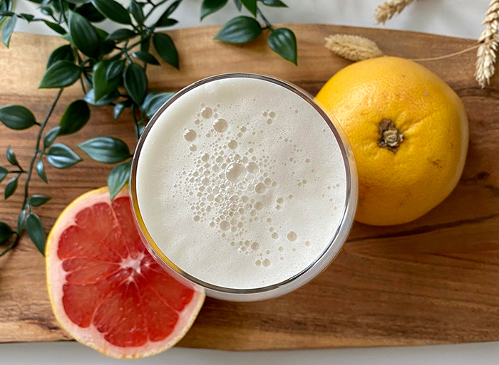

SMAGSVARIANTER

GRAPEFRUGT
TrøjborgBryg byder nu også lækre alkoholfrie frugttilsatte øl. Med grapefrugt går man aldrig galt i byen og dette er et levende bevis på samme. Vores grapefrugtøl er brygget på tørhumlet humlesorter, der bakker op om grapefrugtens smag og aroma. Den er oplagt for dem, som ikke normalt vælger øl, da den både er frisk og læskende.
INGEFÆR
Nu præsenterer vi en helt ny smag af ingefær, som vi har tilsat i flere af vores øl. Og vi er selv er helt vilde med det! Ingefæren tilføjer en ekstrem friskhed til øllen og giver en varm fornemmelse af krydderier. Den kommer også som alkoholfri øl og indeholder kun en lille procent alkohol på 0,2%.